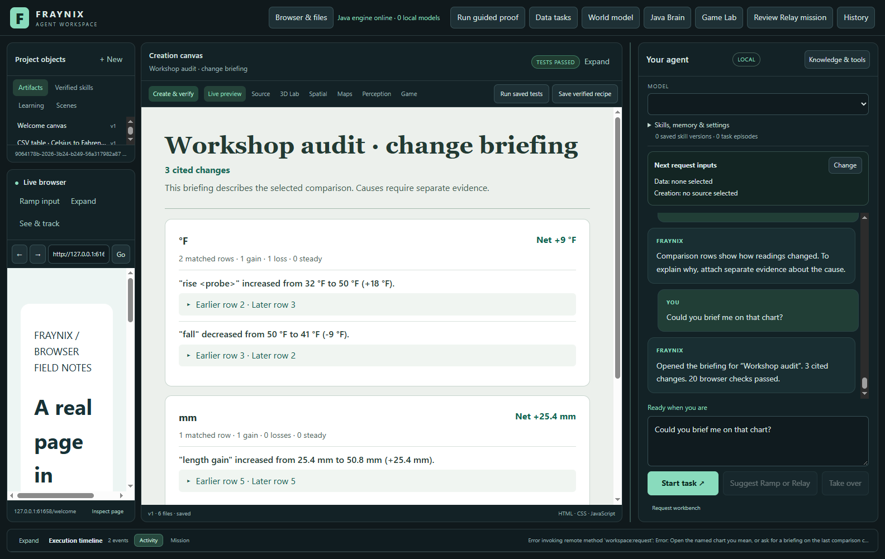
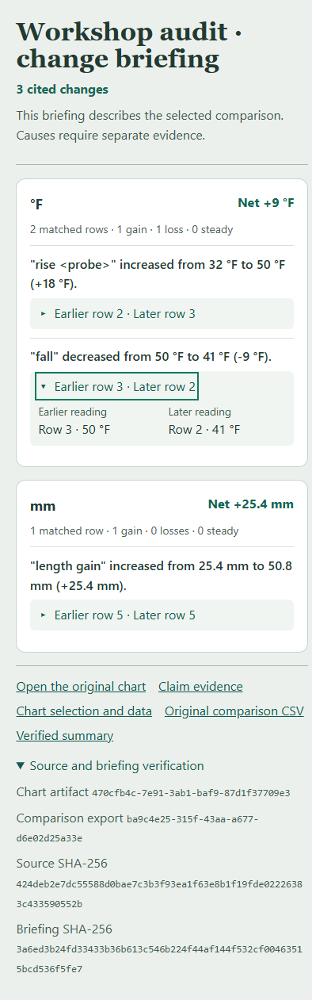

Brief me on that chart
Turn an open named comparison chart into a briefing. Each claim carries the original earlier and later row citations, and the totals stay separate by unit.

A plain-language follow-up opens the cited briefing in Fraynix

The offline briefing opens the 50 °F and 41 °F citations behind a 9 °F loss
System files
Open source